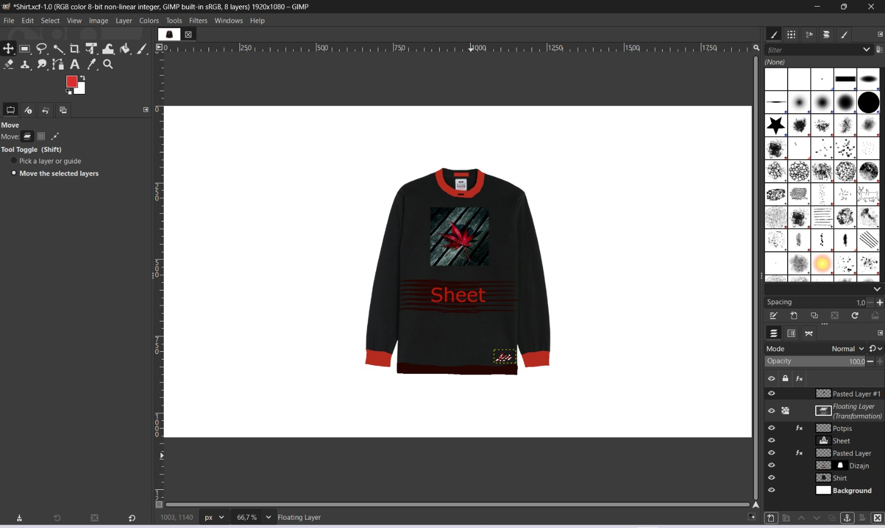
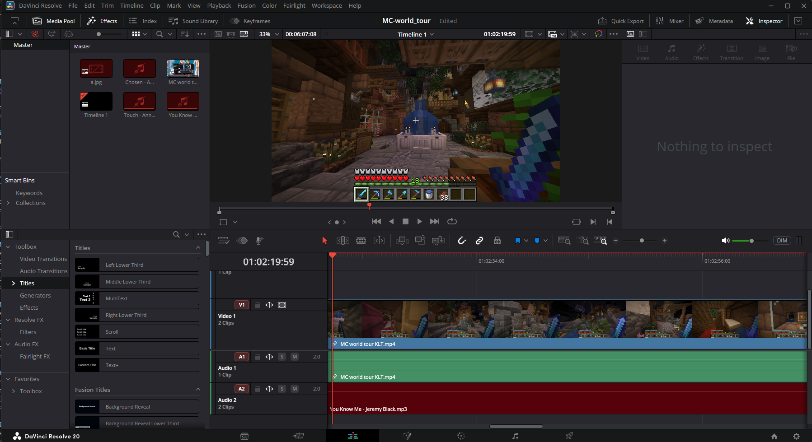

Karlo Zelembrz – Projekt Multimedija
Projekt
Projekt predstavlja izradu web stranicu koja objedinjuje različite multimedijske elemente u sklopu kolegija Multimedija. Cilj projekta je prikazati primjenu teksta, slike, grafike, videa i zvuka kroz jedinstvenu i preglednu web prezentaciju. Web stranica je izrađena korištenjem HTML-a i CSS-a u razvojnom okruženju Visual Studio Code. Struktura stranice organizirana je u tematske cjeline, dok je dizajn prilagođen jednostavnom i ugodnom korisničkom iskustvu. Za grafičke i multimedijske sadržaje korišteni su različiti alati: Inkscape za vektorsku grafiku, GIMP za obradu slike, DaVinci Resolve za video montažu te Audacity za obradu zvuka.
Grafika (Inkscape)
Grafiku sam izradio u programu Inkscape, gdje sam dizajnirao vektorski logo automobila koristeći rad sa slojevima i osnovnim geometrijskim oblicima. Logotip se sastoji od četiri sloja. Rad sam započeo izradom sjene automobila, koju sam dobio pomoću Ellipse Toola i prepolovio koristeći opcije za rad s putanjama (Path), čime sam postigao realističan izgled sjene. Nakon toga sam izradio osnovni oblik automobila pomoću Bezier alata te ga obrubio crvenom bojom kako bih naglasio konture. Na kraju sam dodao tekst “Purple Car” koji prati zakrivljenost automobila koristeći opciju Text on Path. Svi slojevi su jasno organizirani i prikazani ispod glavne slike.
Slika (GIMP)

Slika prikazuje dizajn majice koji sam izradio u programu GIMP, koristeći rad sa slojevima i osnovne alate za obradu raster grafike. Cijeli rad sastoji se od sedam slojeva, što mi je omogućilo pregledno i precizno uređivanje svakog elementa zasebno. Kao osnovu sam koristio crnu majicu preuzetu s interneta, koju sam postavio kao pozadinski sloj. Na dodatnim slojevima sam dodavao grafičke elemente i tekst, pri čemu sam koristio alate Move Tool, Text Tool, Scale Tool i Transform Tool kako bih prilagodio položaj i veličinu elemenata. Posebnu pažnju posvetio sam kontrastu i vidljivosti dizajna na tamnoj podlozi, koristeći prilagodbe boja i prozirnosti. Druga slika prikazuje raspored slojeva, što jasno prikazuje način izrade i organizaciju cijelog dizajna.
Video (DaVinci Resolve)
Video je izrađen u programu DaVinci Resolve, dok je izvorni video materijal snimljen pomoću alata OBS Studio. Ukupna duljina videa iznosi 6 minuta, a veličina datoteke je 2,35 GB. Video sadržaj prikazuje world tour u igri Minecraft. Nakon uvoza snimke u DaVinci Resolve, započeo sam proces montaže na timelineu, gdje sam izrezao nepotrebne dijelove i prilagodio redoslijed scena. U video sam dodao dvije no-copyright glazbene podloge, uvodnu sliku na početku te fade in i fade out efekte na slici, videu i glazbi, čime sam postigao glađe prijelaze i profesionalniji dojam. Obradom zvuka i slike osigurao sam da je završni video pregledan, tečan i ugodan za gledanje.
Zvuk (Audacity)
Zvuk je izrađen u programu Audacity, gdje sam snimio vlastiti glas čitajući kratki članak preuzet s digitalnih novina. Snimanje je izvedeno pomoću mikrofona, nakon čega sam započeo proces obrade zvuka. U Audacityju sam uklonio neželjene dijelove snimke, prilagodio glasnoću te poboljšao čitljivost govora. U pozadinu sam dodao glazbenu podlogu bez autorskih prava, pri čemu sam koristio fade in i fade out efekte kako bi prijelazi između govora i glazbe bili ugodni i prirodni. Također sam vodio računa o balansu glasnoće između govora i glazbe kako bi govor ostao jasan i razumljiv. Završni audio zapis izvezen je u MP3 formatu te je ugrađen u web stranicu pomoću HTML audio elementa, čime je prikazana praktična primjena zvuka kao multimedijskog elementa.